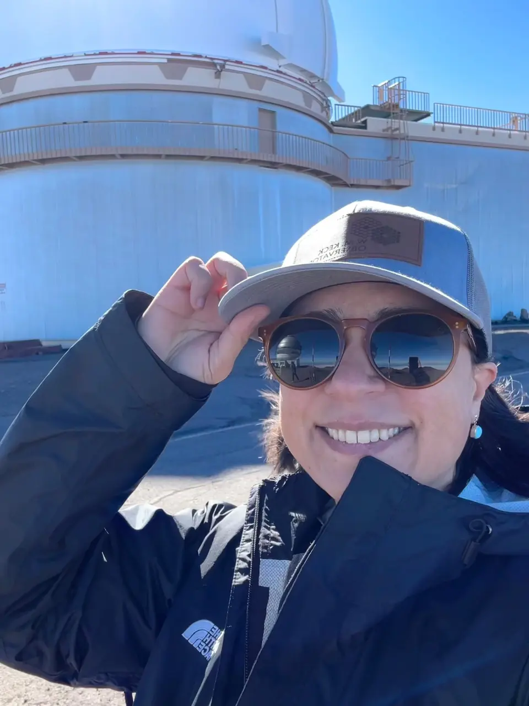
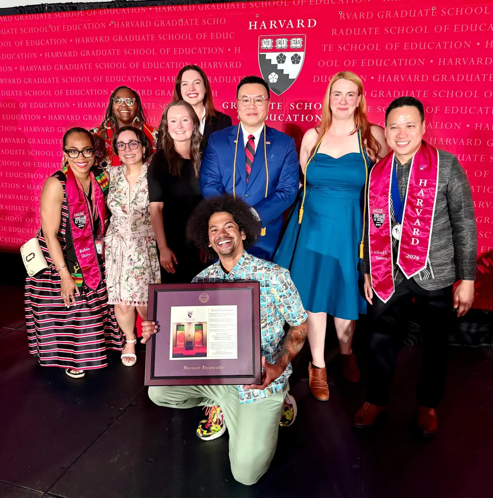
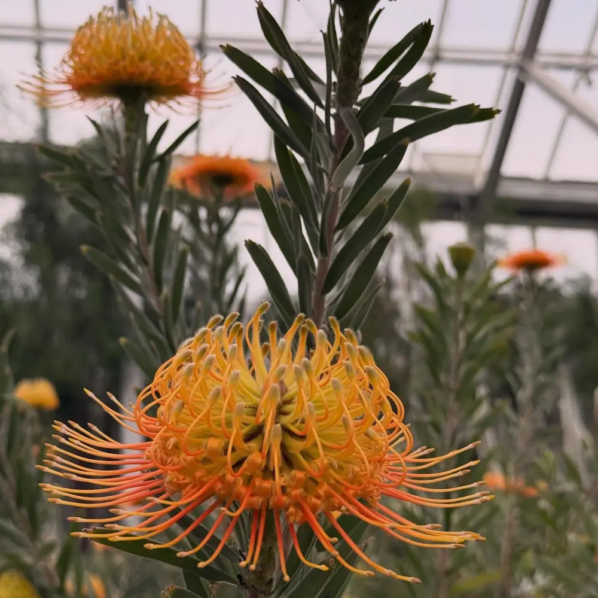

Strategy
See the whole system, clarify the purpose, and create a route from ambition to implementation.
About · The throughline
My work moves between the cosmic and the institutional: how a telescope’s discoveries reach a neighborhood, how prior learning becomes recognized, how a partnership becomes infrastructure, and how people come to see themselves as belonging in discovery.

The work beneath the work
I have spent more than a decade helping museums, science organizations, universities, and national networks make that belonging more reliable.
I began in art museums, designing bilingual family programs and intergenerational experiences. That work taught me that interpretation is never neutral: every invitation, label, activity, and institutional habit tells people whether a place was built with them in mind.
At the Space Telescope Science Institute, that question expanded in scale. I now work across NASA missions, national partner ecosystems, scientists, evaluators, designers, and community institutions—building the strategies and supports that help complex science become locally meaningful.
My practice
See the whole system, clarify the purpose, and create a route from ambition to implementation.
Make complex knowledge usable without flattening its rigor, uncertainty, or wonder.
Strengthen relationships, shared tools, learning loops, and capacity across institutions.
Use writing and speaking to make the human stakes of systems visible.

Harvard · 2026
I completed my Ed.M. in Educational Leadership at the Harvard Graduate School of Education while continuing my work at STScI. My research explored recognition governance, postsecondary value, workforce pathways, and the institutional conditions that determine whether learning actually counts.
At Convocation, I was selected as one of three student speakers. “What Held” asked what becomes possible when attention is treated as care, rigor is not confused with cruelty, and learning is understood as something we hold open for one another.
Read the Harvard feature↗Values in practice
People should not have to decode an institution before they can benefit from it.
Precision and humanity strengthen one another; neither needs to be sacrificed for the other.
Representation matters, but systems must also change what people can access, contribute, and carry forward.
Hope is not optimism without evidence. It is the disciplined refusal to stop designing toward something better.

A note on wonder
I am interested in the moment information becomes relationship.
Sometimes that happens in a classroom. Sometimes beneath a telescope, inside a garden, across a museum floor, or in the quiet square of a virtual classroom. My work is to notice what makes that moment possible—and help build more of it.
What I am building toward
I am drawn to leadership roles in program strategy, field building, philanthropy, public engagement, and higher-education transformation—especially where complex ideas need to become trusted systems and measurable public value.
Connect on LinkedIn ↗